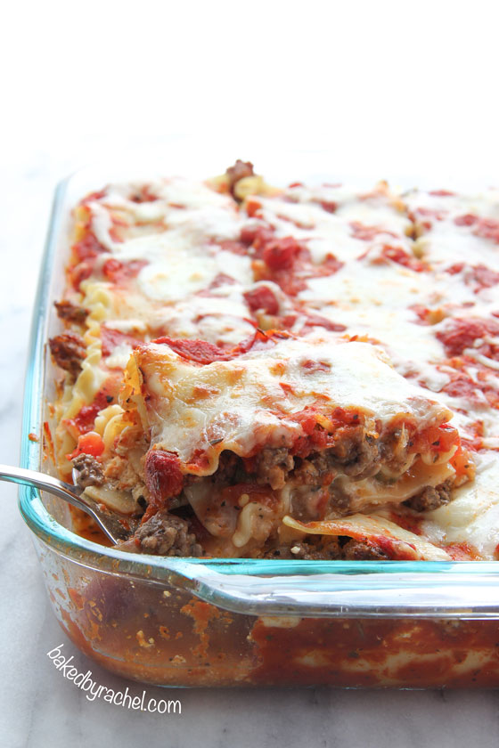

Spicy Lasagna

Ingredients
- 1/2 lb ground beef
- 1 lb hot italian sausage
- 1 1/2 tsp ground balck pepper, divided
- 3/4 c yellow onion, chopped
- 3/4 c green bell pepper, chopped
- 4 cloves garlic, minced
- 14 oz petite diced tomatoes, undrained
- 12 oz jar tomato sauce
- 12-15 lasagna noodles
- 15 oz ricotta cheese
- 1 large egg
- 1/3 c parmesan cheese
- 4 c whole milk mozzarella, shredded
Instructions
- In a large skillet over medium heat, brown beef and sausage. When meat is partially cooked, sprinkle with salt, 1 tsp ground black pepper, basil, oregano and optional red pepper flakes. Toss to coat. Add onion, bell pepper and garlic. Continue tossing and cooking over medium heat until vegetables are tender and meat is fully cooked. Carefully add the tomatoes and juice from one 14oz can. Continue cooking until all ingredients are heated through. Transfer to a large bowl.
- Meanwhile, in a large stockpot, bring water to a rapid boil and cook lasagna noodles according to package directions or personal preference.
- Preheat oven to 375°F. Set aside a 3-quart baking dish.
- In a medium bowl, combine ricotta cheese with egg, Parmesan cheese and remaining 1/2 tsp ground black pepper. Set aside.
- Drain noodles and allow them to dry on baking sheets in single layers.
- To create your lasagna, add 1/2-1C tomato sauce to the bottom of the baking dish. Top off with 3 lasagna noodles. Evenly spread out the entire ricotta mixture, then top off with 3 more noodles. Add half of the meat mixture. Top off with 3 more noodles, half of the cheese and remaining meat. Add final 3 noodles, lightly coat with tomato sauce and remaining cheese.
- Bake for 30 minutes uncovered, or until cheese is bubbly and top is lightly golden.
- Cool for 10 minutes prior to serving.